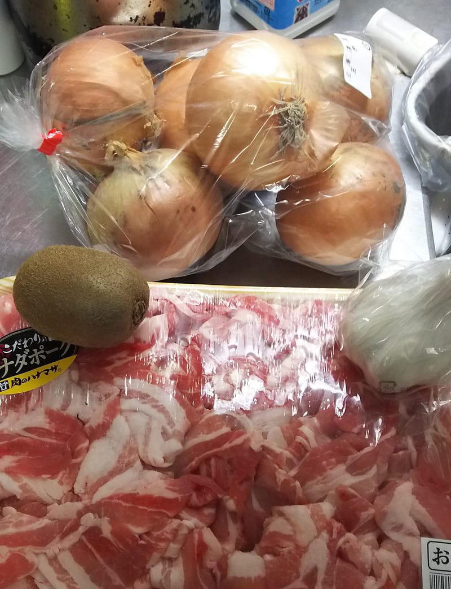
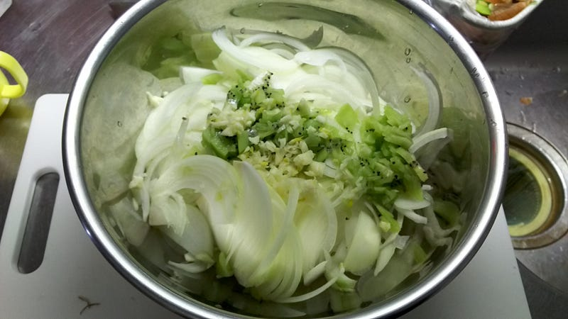
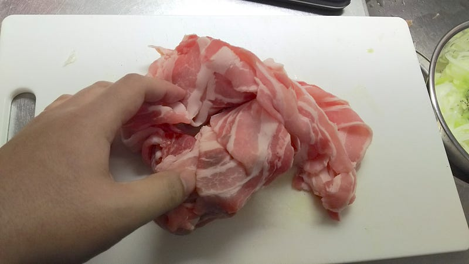
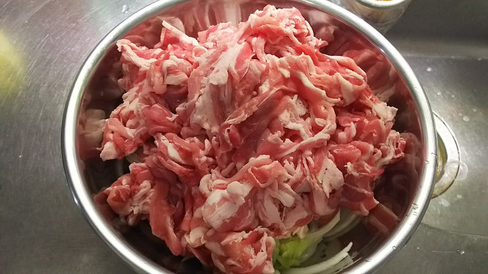
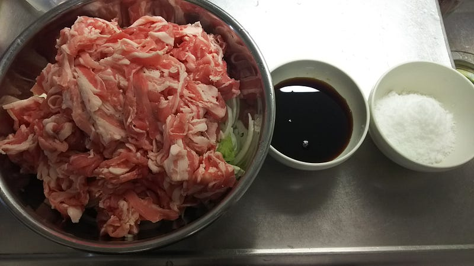
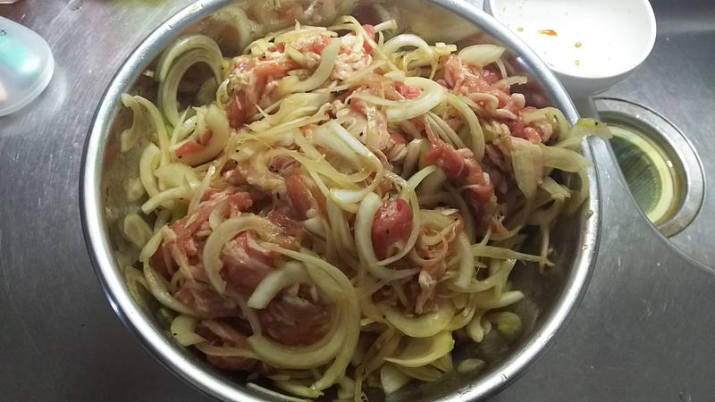
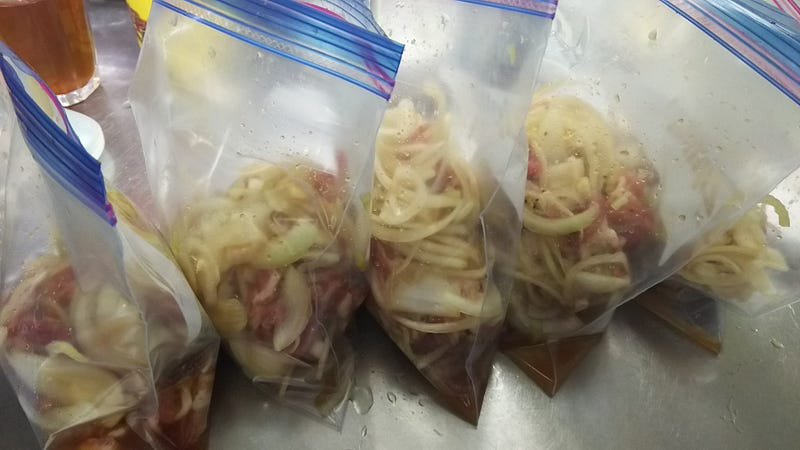

焼き肉（豚）丼の素レシピ
焼き肉（豚）丼の素レシピ
我が家の定番手抜き料理のひとつとして「焼き肉丼の素」というのがある。冷凍して置いて、食べるときに解凍して炒めたらご飯にのっけておしまい、という手抜き料理としては最高の部類に入るヤツである。
昨日は手抜きの日だったので冷凍してあったヤツを食べたのだが、それで前回作ってあった分は終了となってしまった。そういうわけで今日作るにあたって、この手抜き料理のレシピを晒しておこうと思った次第。
まず材料。豚肉、タマネギ、果物（梨とかキウィとか、肉を柔らかくする系のヤツ）、ニンニク。あとは醤油と砂糖と水。基本これだけ。自分は果物はなんか好きなのでキウィ。梨のほうが後に何も残らないんだけど、自分は後に残る種がなぜか愛しい。

このレシピ、元々アメリカに住んでた時に仲良くなった寿司屋の大将（韓国人）のおっちゃんに「プルコギの作り方」として教えてもらったんだけど、それを適当にアレンジして自分のレシピにしてしまった。あのおっちゃん元気かなぁ。
単純かつ豪快なレシピなので、腹ぺこだった当時の自分はよく作ってわしゃわしゃと丼にして食べてた。
まず野菜を切る。今回使う肉はだいたい1kg。お好みでいいんだけど、自分はタマネギ多めが好きなので、大きめのタマネギ丸々2個を細めにザクザク。今回のキウィはちょっと固めだったのでこれも小さく切っておく。ニンニクも大好きなので本当はたっぷり入れたいところだけど、家族も食べるのでなんとか2片で我慢。潰してみじん切り。

最初レシピを教えてもらった時はプルコギだったので当然牛肉前提だったんだけど、実は自分あまり牛肉が好きじゃないのです。いや、BBQとかステーキとか、そういうのは好きなんだけど、良く火の通った牛肉とか、煮てある牛肉とか好きじゃないの… そういうわけで自分は当然のように豚バラ肉を使います。

日本で売ってる豚バラ肉の薄切りは長いので、そのままだと食べにくい。ざっくりでいいので少し短く切っておくと良いと思う。
今回1.5kgの肉を買ったんだけど、ボウルの大きさにより泣く泣く1kgちょいで断念。もはや鍋の素にしか見えない。

これでもう材料は切れたので、あとは味をつけて、揉み込むだけ。
最初大将から味付けを聞いたときは当時の自分の料理の知識としては仰天した。確か「お茶碗に醤油を1杯、砂糖を3杯、水を1杯」と聞いた。なんだその砂糖の量。
当時、自分はまだ和食でも結構しっかり砂糖を効かせたほうがうまい、とかそういう事を知らなかったので、本当にびっくりした記憶がある。お茶碗に砂糖3杯って、パウンドケーキじゃないんだから…
で、結局何回か試行錯誤してみたところ、自分の好みとしては「醤油１、砂糖１、水１」くらいが一番好みだとわかったので、現在はそれでやっている。でも迷ったら砂糖多めで。

分量は適当。今まで肉と対話してきた時の事を思い出して、自分が用意した肉の量に対してどれくらい醤油をつければうまいか思い出しながらやりましょう。ケチってはいけないのは砂糖です。醤油は多少加減しても良し。写真には写っていませんが、水も入れてます。水はただ単純に潤滑油的な立ち位置です。

あとはこれを混ぜて揉みます。揉むのが重要です。揉まないと肉の線維に色々入り込みません。揉んでるとタマネギの辛みの臭いと肉の臭いと醤油の臭いがまざって、もはやこのまま食べられそうな幻想に襲われますが、我慢しましょう。
で、揉んで、少し休ませたら、あとは袋に詰めて冷凍。

一袋300gくらい入ってる。うちだとおかずが少しあれば、大人二人と幼児二人で一袋消費する感じかな。おなか空いてて、他におかずがないと俺が一袋くらい食っちゃうけど…
これ、一旦作っちゃえば冷凍できて好きな時に取り出して炒めるだけだし、ちょっと趣向を変えて肉豆腐みたいにすることもできるし、とにかくすごい便利なのでお勧めです。
なお、うちは子供が男ばかりなので、将来はこれの作り方を教えて、「おなかがすいたらこれ一袋で丼2杯食え」というような事を教えたいと思っている。
というわけで、あの寿司屋のおっちゃん、ありがとな。おっちゃんのレシピは我が家のレシピとなって受け継いでいくぜ。